Types of pessary子宮托類型
Different shapes for different needs不同形狀，對應不同需要
Each shape supports the body in a slightly different way. The guide below is a starting point — your clinician chooses the exact type and size after an examination.每種形狀以略為不同的方式承托身體。以下指南只是起點——確切的類型與尺寸，須由醫護人員檢查後決定。
Quick guide快速指南
Find a type that may suit you尋找可能適合您的類型
Answer two questions for a suggested starting point. This is general guidance, not a prescription — bring the result to your clinician.回答兩條問題，即可得到建議的起點。這只是一般指引，並非處方——請將結果帶給您的醫護人員參考。
How would you describe the prolapse?您的脫垂程度如何？
Choose the closest description.請選擇最接近的描述。
What troubles you most?您最主要的困擾是甚麼？
Pick the one that matters most right now.請選擇目前最重要的一項。
Why it can't be decided online為何不能在網上決定 Correct fitting depends on the size and shape of your body, often after trying more than one device. A pessary that is the wrong size can be uncomfortable or cause harm, so the final choice is always made in person. 正確配戴取決於您身體的尺寸與形狀，往往須試戴多於一款。尺寸不合的子宮托可能令人不適或造成傷害，因此最終選擇必須親身進行。
The shapes各種形狀
Every type, briefly每種類型簡介
Photographs show the actual medical-grade silicone devices, manufactured by Bioteque.圖片為實際的醫療級矽膠子宮托，由 Bioteque 製造。
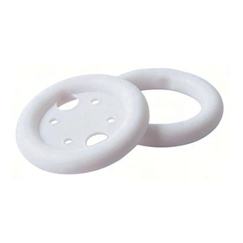
Ring · Ring環形托
With / without support可配承托膜
The most common type and a frequent first choice — gentle support that many women manage themselves.最常用的類型，也是常見的首選——提供溫和支撐，許多女性可自行處理。
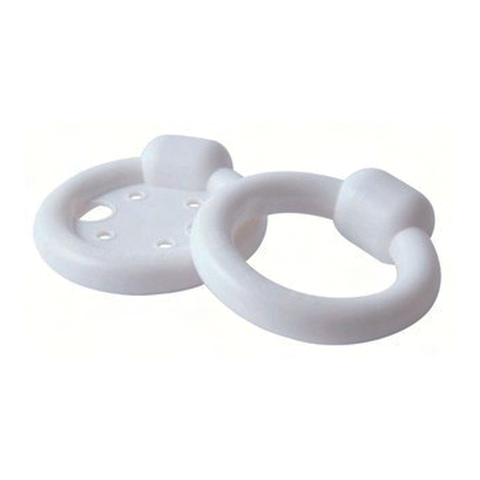
Ring with knob帶凸鈕環形托
With / without support可配承托膜
A ring with a knob that supports the urethra, helping with leaks alongside mild prolapse.在環形上加凸鈕承托尿道，於輕度脫垂之餘兼顧漏尿問題。
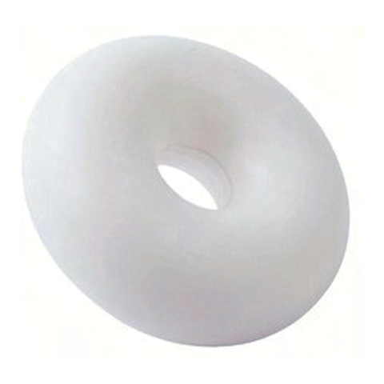
Donut · Donut甜甜圈形托
Space-filling填充式
A thicker, fuller ring giving firmer support for moderate prolapse; suitability is checked by a clinician.較厚、較飽滿的環形，為中度脫垂提供更穩固支撐；須由醫護人員評估。
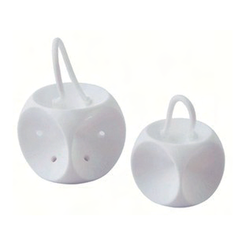
Cube · Cube立方體托
With / without drainage · removal loop可配排液孔 · 取出環
Holds by gentle suction and supports bladder and urethra together. Removed daily; a removal loop helps.以輕微吸附力固定，同時承托膀胱與尿道。需每日取出，設有取出環方便操作。
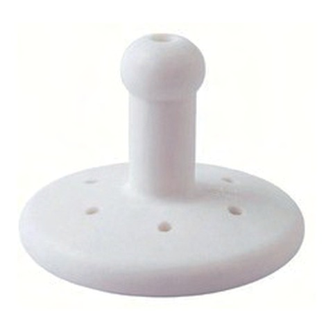
Gellhorn · GellhornGellhorn 托
Short & long stem長／短柄
A disc with a stem giving the strongest support for advanced prolapse. Placed and reviewed by a clinician.帶柱柄的圓盤，為嚴重脫垂提供最強支撐。須由醫護人員放置及覆檢。
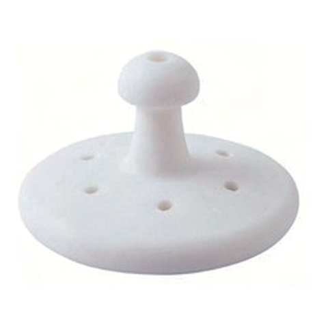
Short-stem Gellhorn短柄 Gellhorn
Shorter stem variant短柄款式
A Gellhorn with a shorter stem, useful where vaginal length is limited.柄部較短的 Gellhorn，適合陰道長度較短的情況。
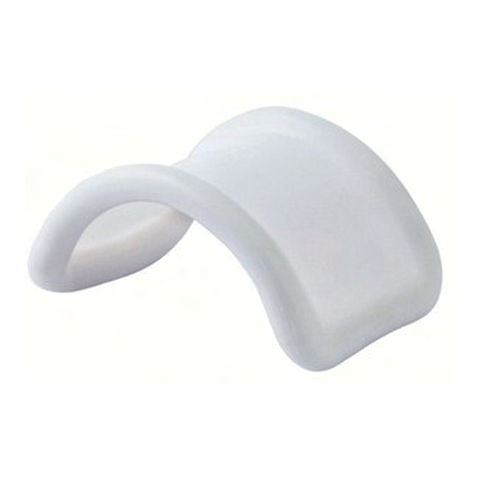
Gehrung · GehrungGehrung 托
Mouldable · MRI-removal可塑形 · 檢查須取出
A bendable saddle shape that can be moulded; its arch keeps clear of the back wall, which many find more comfortable.可彎折塑形的半弧形，弧度避開陰道後壁，許多人感覺較舒適。
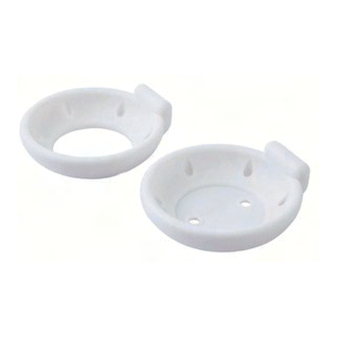
Dish · Dish碟形托
With / without support可配承托膜
A shallow dish with a raised section that supports the urethra — well suited to a noticeable cystocele.淺碟形，設有抬高部分以承托尿道——適合膀胱膨出明顯者。
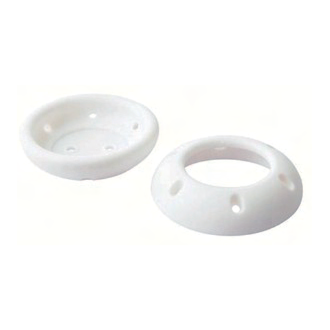
Cup · Cup杯狀托
With / without support可配承托膜
A cup shape — similar to the dish but without the knob — used for mild prolapse with cystocele.杯狀設計，與碟形托相似但沒有凸鈕，適合輕度脫垂伴膀胱膨出。
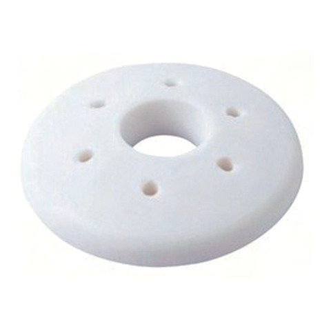
Shaatz · ShaatzShaatz 托
Convex disc · drainage holes凸面圓盤 · 排液孔
A convex disc whose snug fit suits moderate prolapse with cystocele; drainage holes aid removal.凸面圓盤，貼合度高，適合中度脫垂伴膀胱膨出；排液孔有助取出。
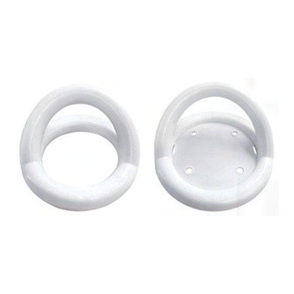
Marland · MarlandMarland 托
With / without support · elevated platform可配承托膜 · 抬高平台
A disc-and-ring with a raised platform that supports moderate prolapse and cystocele, and can also ease stress leaks.圓盤配環、設有抬高平台，承托中度脫垂與膀胱膨出，亦有助減輕壓力性漏尿。
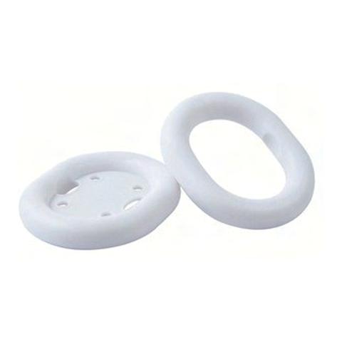
Oval · Oval橢圓形托
With / without support可配承托膜
An oval ring that fits a narrower vagina more comfortably than a round one.橢圓形環，較圓形更貼合較窄的陰道。
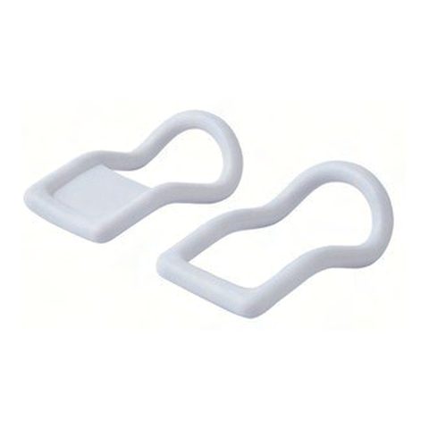
Hodge · HodgeHodge 托
Mouldable · MRI-removal可塑形 · 檢查須取出
An elongated, bendable type that suits a backward-tilted (retroverted) uterus.細長、可塑形的款式，適合子宮後傾者。
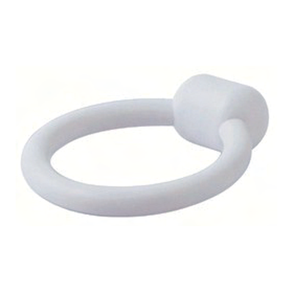
Incontinence Ring失禁環
Urethral support承托尿道
A ring shaped to support the urethra, used mainly for stress leaks alongside mild prolapse.經塑形以承托尿道的環形，主要用於壓力性漏尿，並兼顧輕度脫垂。
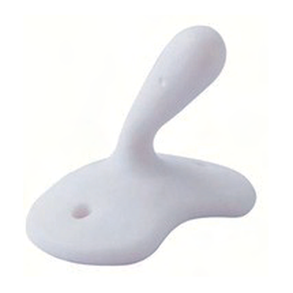
Flexi ShelfFlexi Shelf 托
Anatomical · tapered stem仿生形 · 錐形柄
An anatomically shaped base with a tapered stem for grip, designed to ease removal and limit bowel issues.仿生形底座配錐形柄便於握持，設計上有助取出並減少腸道不適。
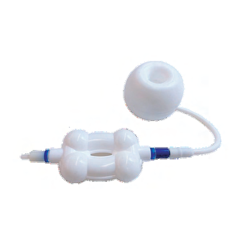
Inflatable Donut充氣甜甜圈托
Inflatable · removable可充氣 · 可取出
A donut that is inserted deflated and then inflated, for advanced cystocele combined with significant prolapse.放入時先放氣、就位後充氣的甜甜圈托，適合膀胱膨出較嚴重並合併明顯脫垂的情況。
At a glance一覽表
Which type for which situation類型與情況對照
A simplified general guide based on common use. A dot means the type is often considered for that situation — it is not a recommendation for you specifically.這是根據常見用途整理的簡化指南。圓點代表該類型常用於相關情況，並非針對個人的建議。
| Type類型 | Mild prolapse輕度脫垂 | Advanced prolapse嚴重脫垂 | Cystocele膀胱膨出 | Rectocele直腸膨出 | Stress leaking壓力性漏尿 | Retroverted子宮後傾 |
|---|---|---|---|---|---|---|
| Ring | ● | – | ● | – | – | – |
| Ring with knob | ● | – | ● | – | ● | – |
| Oval | ● | – | ● | – | – | – |
| Shaatz | ● | ● | – | – | – | – |
| Hodge | ● | – | ● | – | ● | ● |
| Donut | – | ● | ● | ● | – | – |
| Cube | – | ● | ● | ● | – | – |
| Gellhorn | – | ● | ● | – | – | – |
| Short-stem Gellhorn | – | ● | ● | – | – | – |
| Gehrung | – | ● | ● | ● | – | – |
| Dish | ● | ● | ● | – | ● | – |
| Cup | ● | ● | ● | – | ● | – |
| Marland | ● | ● | ● | – | ● | – |
| Incontinence Ring | – | – | – | – | ● | – |
| Flexi Shelf | – | ● | – | – | – | – |
| Inflatable Donut | – | ● | ● | – | – | – |
A note on scans關於影像檢查 The malleable Gehrung and Hodge types contain a bendable metal core, so they must be removed before an MRI — and your clinician should be told before any scan. 可塑形的 Gehrung 及 Hodge 托含可彎折的金屬芯，進行磁力共振前必須取出；接受任何影像檢查前亦應告知醫護人員。